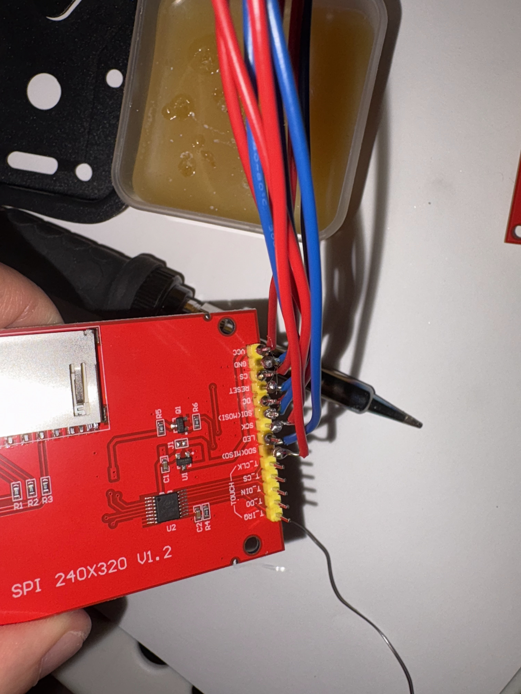
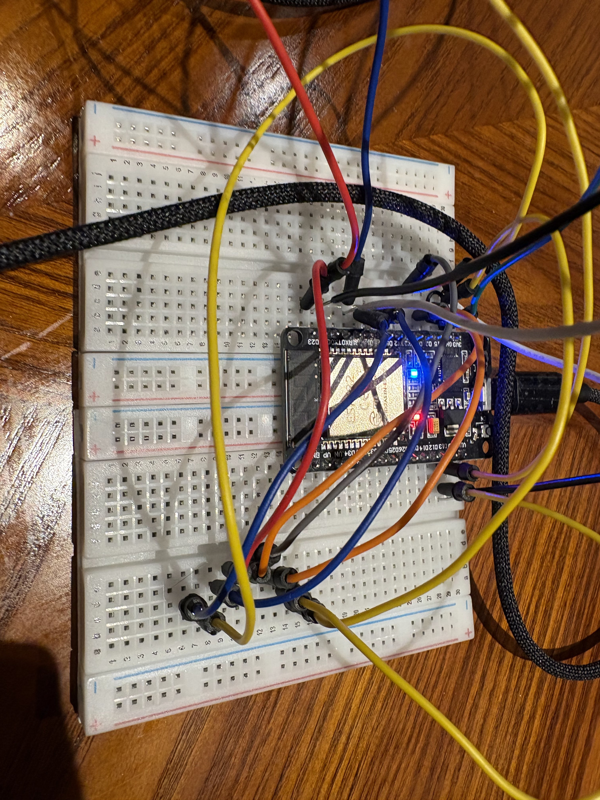

Overview
Role: designer / creator / programmer / artist
Dreamcore is a two-folio interactive pop-up installation presenting abandoned dreamlands through physical paper engineering and responsive digital elements. The piece combines hand-drawn illustration, pop-up mechanisms, embedded electronics, and digital motion to create a liminal “safe space” for exploring memory and mental health.
Medium & Tools
- Hand-drawn ink and acrylic marker on paper
- Custom pop-up and paper mechanisms
- Microcontrollers, sensors, and Arduino IDE
- Unity for animated sequences and screen-based elements
Video Documentation
Installation Photos
Classroom


Theatre


Progress
Start
- Core idea: I explore liminal spaces as a psychological safe zone—transitional, empty, ambiguous environments that evoke nostalgia and disorientation, where one can return to the past without being overwhelmed by it.
- Why this sample: I chose Dreamcore as a creative sample because it combines physical craft and responsive technology, showing my range across hand-drawn illustration, analog making, and interactive systems.
- Format: A two-folio hybrid pop-up project that studies where emotion and dreamcore aesthetics intersect—an object that behaves like neither a traditional book nor a conventional installation.
- Art foundation: Backgrounds were hand-drawn, digitally edited, and printed on 100lb paper to preserve ink texture while supporting embedded electronics.
Production
- Folio 1 scene + interaction: An empty classroom and a lone bicycle selling balloons. Through interaction, balloons drift out the window into a sky that feels familiar and unreal.
- Folio 2 scene + interaction: Fading small shops and a vast silent movie theater. With a remote control, the viewer tilts the screen toward themselves—confronting their presence in emptiness—or watches a half-forgotten memory: a kiddie ride rocking outside an abandoned shop.
- Toolchain + materials: Pop-up engineering, drawing, printmaking, origami, Processing sketches, TFT display, rotary encoder, color sensor, and ESP32-based responses.
- Design intention: I blur the boundary between physical craft and digital interaction. The project’s innovation lives in the tension between mediums—each interaction becomes a small rupture where the familiar feels slightly off-center.
Dreamcore — Process & Details



.png)
.png)
.png)
Looking back & reflection
- Viewer experience: Dreamcore aims to evoke strange comfort—empty but not lonely, distorted yet gentle—creating an introspective pause where viewers briefly step outside themselves.
- What I learned: Building Dreamcore taught me patience and resilience. Each mechanism required repeated trial and error—cutting, folding, measuring, coding, redrawing, and rebuilding.
- Technical growth: Working with pop-up structures, sensors, TFT displays, and live Processing-to-display experiments pushed me to plan carefully while staying open to discovery.
- Key takeaway: Innovation doesn’t emerge from technology alone—it lives in the overlap between mediums, memories, and dreamlike spaces in between. By weaving analog texture with interactive motion, I created a space where emotion can be encountered quietly—suspended between reality and a dream.